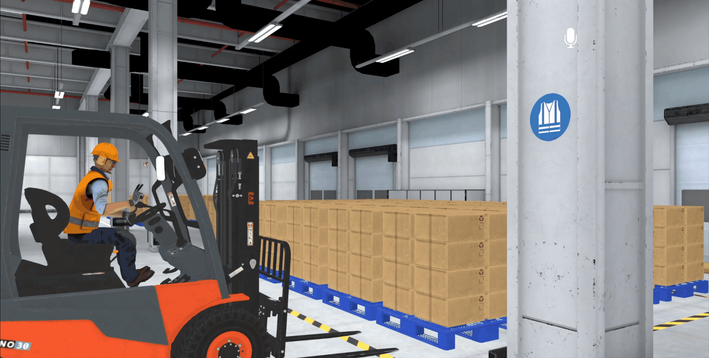
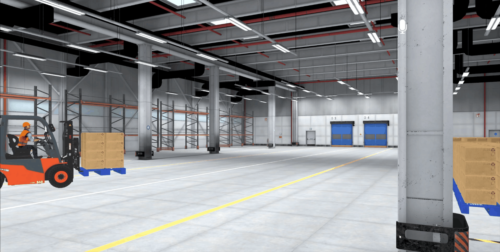
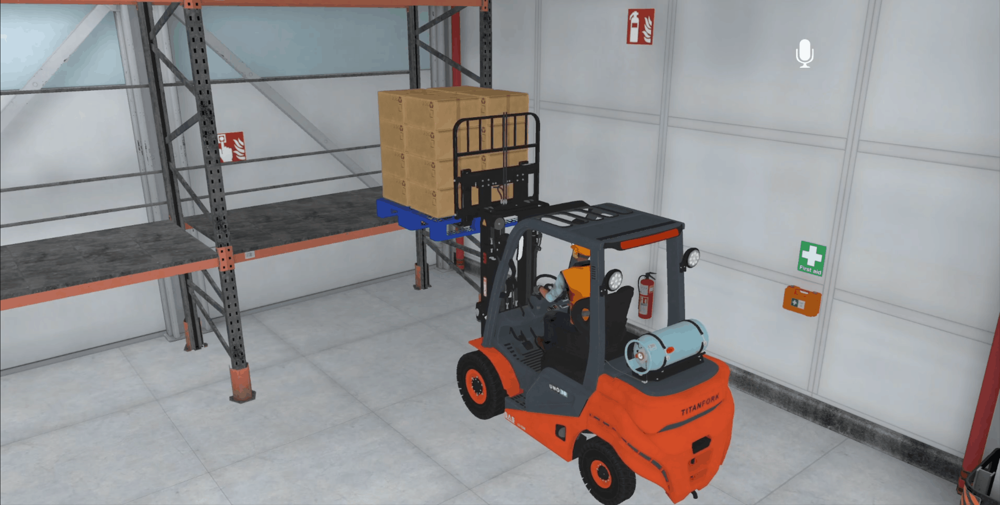
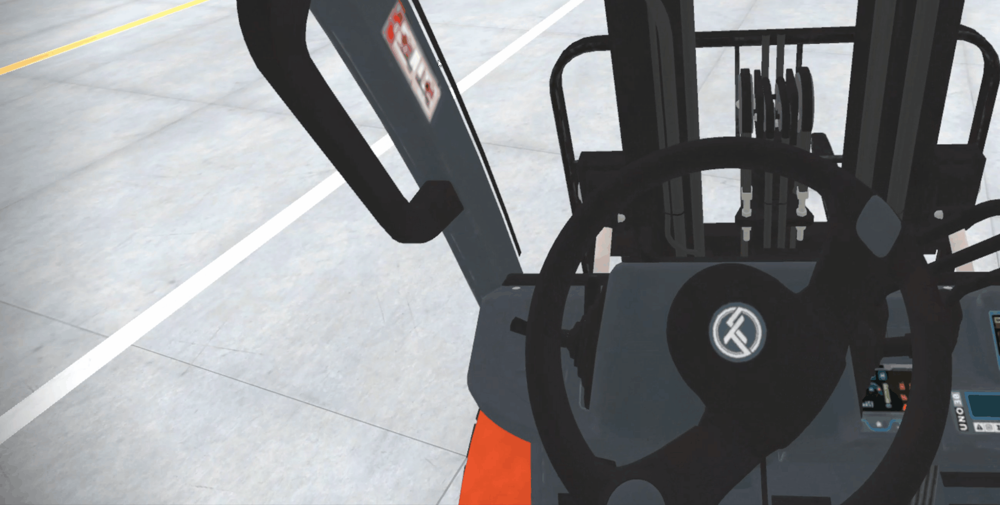
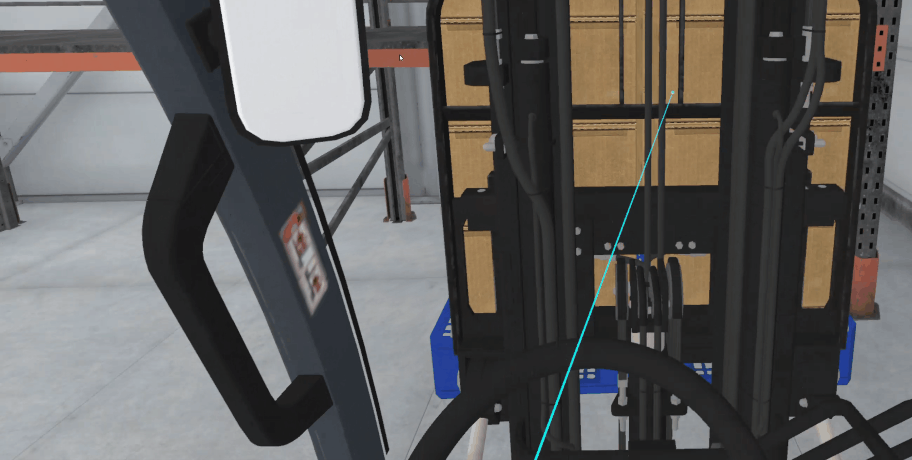

Focus
Guided task execution
The simulation gives trainees repeated practice with safety checks, maneuver tasks, and decision-making through structured in-headset guidance.
VR Training Project
Forklift Training Simulation is a virtual reality training experience built to lower training costs, improve safety, and help learners prepare for forklift certification. Users practice inspection, maneuvering, and hazard awareness inside a controlled environment with guided prompts, task sequencing, and immediate feedback before working with real equipment.
Focus
The simulation gives trainees repeated practice with safety checks, maneuver tasks, and decision-making through structured in-headset guidance.
Outcome
Organizations can reduce unsafe beginner mistakes while giving users clearer feedback on task state and training progress.
Project Media




